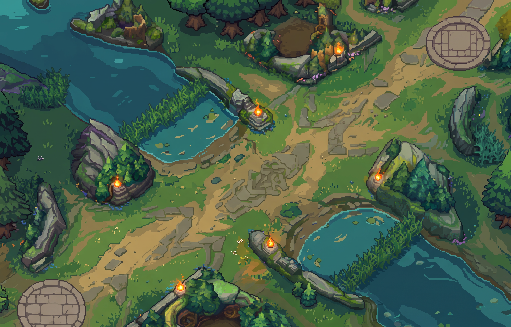

普攻动画 · 3×整数放大

完整刀刃 / 原地挥刀 / 固定镜头
右下朝向 SE · 一次挥刀 · 素材加载中… · 动作样稿，未接入正式对局。

动作参考：英雄联盟官方亚索页，R演示约6.0–7.2秒的近身普攻。这里只参考挥刀、身体扭转和回收，不复刻大招、Q刺击及强化特效。
根据 game-assets 流程先编辑出刀起手，再用 Pixel 帧动画生成。动画时长是素材预览速度，不代表官方攻速或伤害判定时间。
点击某帧暂停查看。背景棋盘用于检查透明度；不平滑缩小原素材。